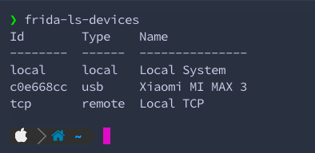
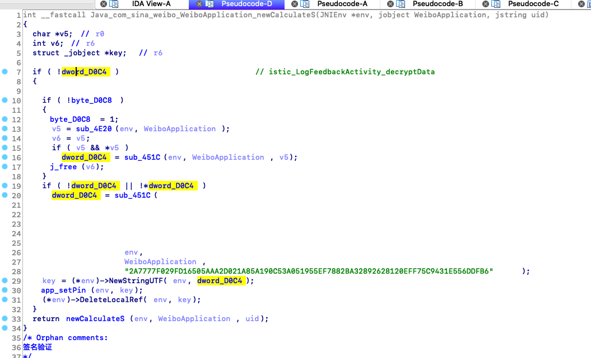
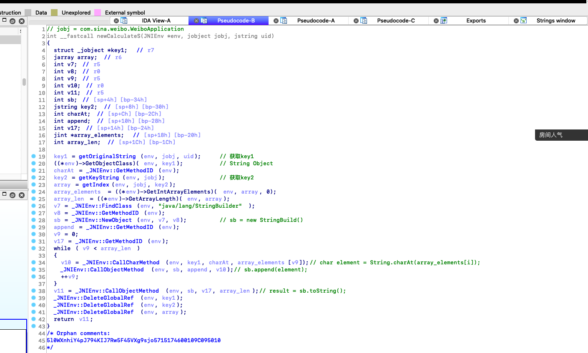
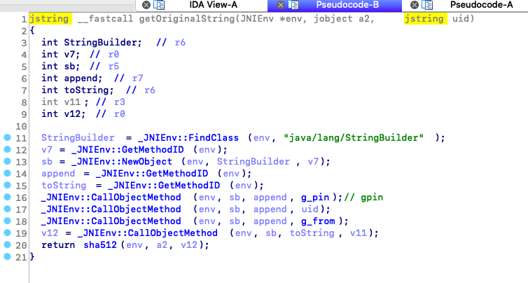
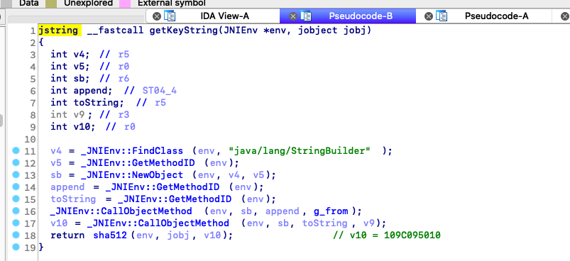
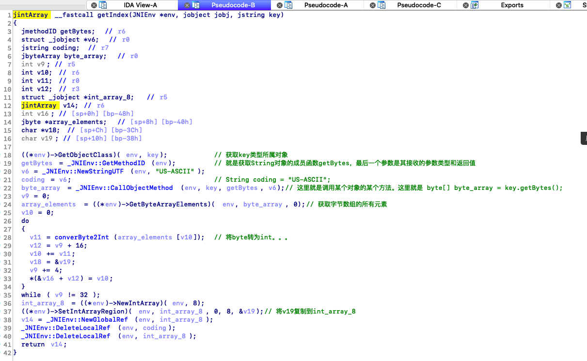
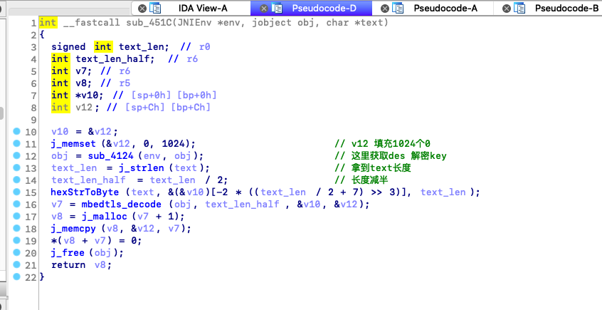
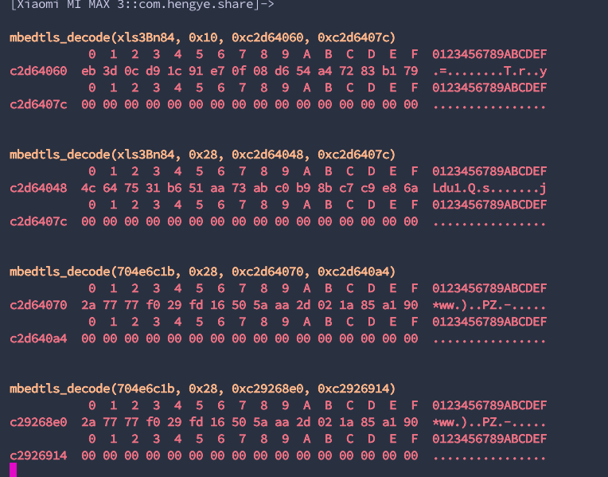
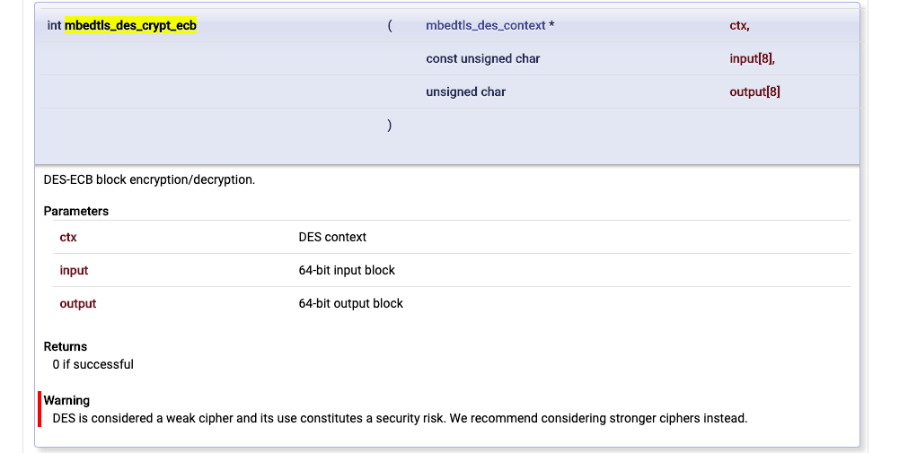
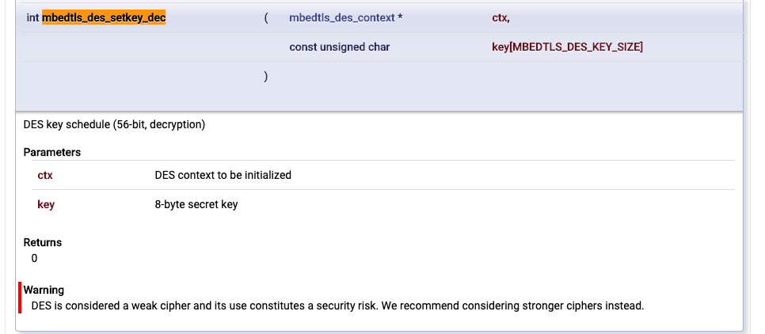

RADARE2+FRIDA=R2FRIDA Your Best Dynamic Debugging Tool
前言
演示例子:
- Sina Weibo
- Xiao Hongshu
参考资料: r2wiki、enovella wiki
正文
0x1 安装
首先安装radare2，Windows用户可以在这里下载可执行文件安装
然后安装r2frida，自行克隆安装
用frida-ls-devices工具获取 usb device id

接着用frida-ps -U | grep xhs获取完整包名
然后根据id和package name用radare连接frida:1
r2 frida://c0e668cc/com.xingin.xhs
然后你会得到一个r2dare的交互模式1
2
3
4❯ r2 frida://c0e668cc/com.xingin.xhs
WARNING: r_bin_open_buf: assertion '(st64)opt->sz >= 0' failed (line 250)
-- SSAbotage from ISIL
0x2 使用
0x2.1> help
首先介绍怎么使用help；对了，要使用r2frida的命令，得在命令的前面加上 \ 或 =!；比如获取help1
2
3
4
5
6
7
8
9
10
11
12
13
14
15
16
17
18
19
20
21
22
23
24
25 =!? or \?
=!?
r2frida commands available via =! or \ prefix
. script Run script
frida-expression Run given expression inside the agent
/[x][j] <string|hexpairs> Search hex/string pattern in memory ranges (see search.in=?)
/v[1248][j] value Search for a value honoring `e cfg.bigendian` of given width
/w[j] string Search wide string
<space> code.. Evaluate Cycript code
? Show this help
?V Show target Frida version
chcon file Change SELinux context (dl might require this)
d. Start the chrome tools debugger
db (<addr>|<sym>) List or place breakpoint
db- (<addr>|<sym>)|* Remove breakpoint(s)
dc Continue breakpoints or resume a spawned process
dd[j-][fd] ([newfd]) List, dup2 or close filedescriptors (ddj for JSON)
di[0,1,-1] [addr] Intercept and replace return value of address
dk ([pid]) [sig] Send specific signal to specific pid in the remote system
dkr Print the crash report (if the app has crashed)
dl libname Dlopen a library (Android see chcon)
dl2 libname [main] Inject library using Frida's >= 8.2 new API
dm[.|j|*] Show memory regions
dma <size> Allocate <size> bytes on the heap, address is returned
... 有点长
这是获取所有命令的帮助，如果想要获取某个字母有哪些命令只需要在其后面加
?即可
例如我想知道i字母开头的有哪些命令，都是干嘛的1
2
3
4
5
6
7
8
9
10
11
12
13
14
15
16 \i?
i dump info
i* dump info r2
iAE list all exports
iAE* list all exports r2
iAEj list all exports json
iAn list all classes natives
iAs list all symbols
iAs* list all symbols r2
iAsj list all symbols json
iE list exports
iE* list exports r2
iE. lookup symbol here
iEa lookup export
iEa* lookup export r2
...
0x2.2> dm
简单介绍下常用命令。首先是获取so的信息命令 dm，比如地址。这里用到的匹配符~，这个符号类似grep命令1
2
3
4
5 \dm~shield
0xc5a1a000 - 0xc5a95000 r-x /data/app/com.xingin.xhs-9gUqbwWzalUnAgU88apeTQ==/lib/arm/libshield.so
0xc5a95000 - 0xc5a99000 r-- /data/app/com.xingin.xhs-9gUqbwWzalUnAgU88apeTQ==/lib/arm/libshield.so
0xc5a99000 - 0xc5a9a000 rw- /data/app/com.xingin.xhs-9gUqbwWzalUnAgU88apeTQ==/lib/arm/libshield.so
你也可以以radare的格式输出，只需要在命令后面加个 * 符号1
2
3
4 \dm*~shield
f map.0xc5a1a000 = 0xc5a1a000 # r-x /data/app/com.xingin.xhs-9gUqbwWzalUnAgU88apeTQ==/lib/arm/libshield.so
f map.0xc5a95000 = 0xc5a95000 # r-- /data/app/com.xingin.xhs-9gUqbwWzalUnAgU88apeTQ==/lib/arm/libshield.so
f map.0xc5a99000 = 0xc5a99000 # rw- /data/app/com.xingin.xhs-9gUqbwWzalUnAgU88apeTQ==/lib/arm/libshield.so
然后呢，如果你想更方便的把获取到的数据直接使用，可以输出为json格式，只需要在命令后面加j1
2
3 \dmj~shield
Do you want to print 1 lines? (y/N) y
[{"base":"0x12c00000","size":3145728,"protection":"rw-","file":{"path":"/dev/ashmem/dalvik-main space (region space) (deleted)","offset":0,"size":0}},{"base":"0x12f00000","size":4456448,"protection":"---","file":{"path":"/dev/ashmem/dalvik-main space (region space) (deleted)","offset":3145728,"size":0}},{"base":"0x13340000","size":262144,"protection":"rw-","file":{"path":"/dev/ashmem/dalvik-main space (region space) (deleted)","offset":7602176,"size":0}},{"base":"0x13380000","size":262144,"protection":"---","file":{"path":"/dev/ashmem/dalvik-main space (region space) (deleted)",...
0x2.3> iE
然后是获取so文件的所有导出函数命令 iE，应该是 info exports （我猜的1
2
3
4
5
6
7
8
9
10
11
12
13
14
15
16
17
18
19
20
21
22
23
24
25
26 \iE* libshield.so
f sym.fun._Znaj = 0xc5a3f8b5
f sym.fun._ZdaPv = 0xc5a3e579
f sym.fun._ZdlPv = 0xc5a3e575
f sym.fun.__cxa_begin_catch = 0xc5a3ebd5
f sym.fun._ZSt9terminatev = 0xc5a3f4bd
f sym.fun._Znwj = 0xc5a3f861
f sym.var._ZTVN10__cxxabiv117__class_type_infoE = 0xc5a97290
f sym.fun.JNI_OnLoad = 0xc5a257a9
f sym.fun.__cxa_allocate_exception = 0xc5a3e655
f sym.fun.__cxa_throw = 0xc5a3f571
f sym.fun.__cxa_free_exception = 0xc5a3e6fd
f sym.fun.__cxa_rethrow = 0xc5a3f5f1
f sym.fun.__cxa_end_catch = 0xc5a3ec65
f sym.var._ZSt7nothrow = 0xc5a94138
f sym.fun._ZNSt8_Rb_treeISsSsSt9_IdentityISsESt4lessISsESaISsEE5clearEv = 0xc5a36c99
f sym.fun._ZNSt8_Rb_treeISsSsSt9_IdentityISsESt4lessISsESaISsEE16_M_insert_uniqueISsEESt4pairISt17_Rb_tree_iteratorISsEbEOT_ = 0xc5a36d3d
f sym.fun._ZNSt8_Rb_treeISsSsSt9_IdentityISsESt4lessISsESaISsEE4findERKSs = 0xc5a38701
f sym.fun._ZNSt6vectorISsSaISsEED2Ev = 0xc5a2df71
f sym.fun._ZNSt8_Rb_treeISsSsSt9_IdentityISsESt4lessISsESaISsEED2Ev = 0xc5a36f11
f sym.fun._ZNSt6vectorISsSaISsEE7reserveEj = 0xc5a32455
f sym.fun._ZNSt6vectorISsSaISsEE19_M_emplace_back_auxIJSsEEEvDpOT_ = 0xc5a39361
f sym.fun.__cxa_guard_acquire = 0xc5a3f665
f sym.fun.__cxa_guard_release = 0xc5a3f7dd
f sym.fun._ZNSt9exceptionD2Ev = 0xc5a3ed01
...
0x.24> \/
搜索内存中的数据 \/；首先看看help1
2
3
4
5 \?~^/
/[x][j] <string|hexpairs> Search hex/string pattern in memory ranges (see search.in=?)
/v[1248][j] value Search for a value honoring `e cfg.bigendian` of given width
/w[j] string Search wide string
基础使用方法：\/ keyword
比如我要搜索…..emmmmmm：TracerPid；首先是一顿输出，然后会出现找到的个数，比如这里的12个，然后对应着地址和内容1
2
3
4
5
6
7
8
9
10
11
12
13
14
15
16
17
18
19
20
21
22
23 \/ TracerPid
Searching 9 bytes: 54 72 61 63 65 72 50 69 64
Searching 9 bytes in [0x12c00000-0x15180000]
Searching 9 bytes in [0x151c0000-0x155c0000]
Searching 9 bytes in [0x15640000-0x15680000]
...
Searching 9 bytes in [0xff508000-0xffd07000]
Searching 9 bytes in [0xffff0000-0xffff1000]
hits: 12
0x14626d48 hit0_0 TracerPid:
0xab1108f4 hit0_1 TracerPid:
0xc2972232 hit0_2 TracerPid:
0xc4c1e76c hit0_3 TracerPid
0xc5aa7810 hit0_4 TracerPid:0
0xc5ab2da8 hit0_5 TracerPid
0xc8eb9c5e hit0_6 TracerPid:0Uid:10185101851018510185Gid:10185101851
0xcb15818c hit0_7 TracerPid:
0xd21ff45e hit0_8 TracerPid:0Uid:10185101851018510185Gid:10185101851
0xd21ff85e hit0_9 TracerPid:0Uid:10185101851018510185Gid:10185101851
0xd277b892 hit0_10 TracerPid:
0xdf57105d hit0_11 TracerPid:0Uid:10185101851018510185Gid:10185101851
为了验证我刚刚所说的，直接看内存，正好可以教用一个字母看内存数据，这个命令是radare的命令，这就是交互的好处。为了更好的凸显数据，我选择的是比较长的那个字符串，地址是：0xc8eb9c5e1
2
3
4
5
6
7
8
9
10
11
12
13
14
15
16
17
18
19 x @ 0xc8eb9c5e
- offset - 0 1 2 3 4 5 6 7 8 9 A B C D E F 0123456789ABCDEF
0xc8eb9c5e 5472 6163 6572 5069 643a 0930 0a55 6964 TracerPid:.0.Uid
0xc8eb9c6e 3a09 3130 3138 3509 3130 3138 3509 3130 :.10185.10185.10
0xc8eb9c7e 3138 3509 3130 3138 350a 4769 643a 0931 185.10185.Gid:.1
0xc8eb9c8e 3031 3835 0931 3031 3835 0931 3031 3835 0185.10185.10185
0xc8eb9c9e 0931 3031 3835 0a46 4453 697a 653a 0935 .10185.FDSize:.5
0xc8eb9cae 3132 0a47 726f 7570 733a 0933 3030 3320 12.Groups:.3003
0xc8eb9cbe 3939 3937 2032 3031 3835 2035 3031 3835 9997 20185 50185
0xc8eb9cce 2039 3939 3039 3939 3720 0a56 6d50 6561 99909997 .VmPea
0xc8eb9cde 6b3a 0920 3234 3131 3832 3020 6b42 0a56 k:. 2411820 kB.V
0xc8eb9cee 6d53 697a 653a 0920 3233 3439 3730 3820 mSize:. 2349708
0xc8eb9cfe 6b42 0a56 6d4c 636b 3a09 2020 2020 2031 kB.VmLck:. 1
0xc8eb9d0e 3136 206b 420a 566d 5069 6e3a 0920 2020 16 kB.VmPin:.
0xc8eb9d1e 2020 2020 3020 6b42 0a56 6d48 574d 3a09 0 kB.VmHWM:.
0xc8eb9d2e 2020 3637 3539 3336 206b 420a 566d 5253 675936 kB.VmRS
0xc8eb9d3e 533a 0920 2035 3636 3431 3620 6b42 0a52 S:. 566416 kB.R
0xc8eb9d4e 7373 416e 6f6e 3a09 2020 3130 3630 3136 ssAnon:. 106016
x 是 px 命令的简写，这个命令作用是show hexdump。从上面可以明确的看到字符串；还可以用ps 命令直接输出pretty的字符串，当然得事先知道指定的地址内容存的是字符串，不然返回的就不知道是一堆啥玩意儿了，使用方法和px差不多1
2
3
4
5
6
7
8
9
10
11
12
13
14 ps @ 0xc8eb9c5e
TracerPid:\x090
Uid:\x0910185\x0910185\x0910185\x0910185
Gid:\x0910185\x0910185\x0910185\x0910185
FDSize:\x09512
Groups:\x093003 9997 20185 50185 99909997
VmPeak:\x09 2411820 kB
VmSize:\x09 2358724 kB
VmLck:\x09 116 kB
VmPin:\x09 0 kB
VmHWM:\x09 675936 kB
VmRSS:\x09 522464 kB
RssAnon:\x09 100820
这里用json格式输出就很舒服了1
2
3 psj @ 0xc8eb9c5e
{"string":"TracerPid:\u00090\u000aUid:\u000910185\u000910185\u000910185\u000910185\u000aGid:\u000910185\u000910185\u000910185\u000910185\u000aFDSize:\u0009512\u000aGroups:\u00093003 9997 20185 50185 99909997 \u000aVmPeak:\u0009 2411820 kB\u000aVmSize:\u0009 2253264 kB\u000aVmLck:\u0009 116 kB\u000aVmPin:\u0009 0 kB\u000aVmHWM:\u0009 675936 kB\u000aVmRSS:\u0009 84988 kB\u000aRssAnon:\u0009 0","offset":3370884190,"section":"unknown","length":256,"type":"ascii"}
搜索也可以指定搜索的数据类型以及输出的格式，比如以十六进制搜索输出json格式的结果1
2
3
4
5
6
7
8
9
10 \/xj 547261636572506964
Searching 9 bytes: 54 72 61 63 65 72 50 69 64
Searching 9 bytes in [0x12c00000-0x12d80000]
Searching 9 bytes in [0x12f80000-0x12fc0000]
Searching 9 bytes in [0x13000000-0x13040000]
Searching 9 bytes in [0x13340000-0x13380000]
...
Searching 9 bytes in [0xffff0000-0xffff1000]
hits: 12
[{"address":"0x13033778","size":9,"flag":"hit2_0","content":"547261636572506964"},{"address":"0xab1108f4","size":9,"flag":"hit2_1","content":"547261636572506964"},{"address":"0xc2972232","size":9,"flag":"hit2_2","content":"547261636572506964"},{"address":"0xc4c1e76c","size":9,"flag":"hit2_3","content":"547261636572506964"},{"address":"0xc5aa7810","size":9,"flag":"hit2_4","content":"547261636572506964"},{"address":"0xc5ab2da8","size":9,"flag":"hit2_5","content":"547261636572506964"},{"address":"0xc8eb9c5e","size":9,"flag":"hit2_6","content":"547261636572506964"},{"address":"0xcb15818c","size":9,"flag":"hit2_7","content":"547261636572506964"},{"address":"0xd21ff45e","size":9,"flag":"hit2_8","content":"547261636572506964"},{"address":"0xd21ff85e","size":9,"flag":"hit2_9","content":"547261636572506964"},{"address":"0xd277b892","size":9,"flag":"hit2_10","content":"547261636572506964"},{"address":"0xdf57105d","size":9,"flag":"hit2_11","content":"547261636572506964"}]
0x3 Dynamic
这个功能特别牛逼，啊不，应该说radare+frida在这方法特别牛逼，所以我要单独拿出来做一个大块说。
首先看help1
2
3
4
5
6
7
8
9
10
11
12
13
14
15
16
17
18
19
20
21
22
23
24
25
26
27
28
29
30
31
32
33
34
35
36
37
38
39
40
41
42
43
44
45
46
47
48
49
50
51
52
53
54
55
56
57
58
59
60
61
62
63
64
65
66
67
68 \d?
db breakpoint
db- breakpoint unset
dbj breakpoint json
dc breakpoint continue
dcu breakpoint continue until
dd list file descriptors
dd- close file descriptors
ddj list file descriptors json
di intercept help
di-1 intercept ret_1
di0 intercept ret0
di1 intercept ret1
dis intercept ret string
dk send signal
dl dlopen
dm list memory ranges
dm* list memory ranges r2
dm. list memory ranges here
dma alloc size
dma- remove alloc
dmad alloc dup
dmal list allocs
dmas alloc string
dmh list malloc ranges
dmh* list malloc ranges r2
dmhj list malloc ranges json
dmhm list malloc maps
dmj list memory ranges json
dmm list memory maps
dmm. list memory ranges here
dmp change memory protection
dp get pid
dpj get pid json
dpt list threads
dptj list threads json
dr dump registers
dr* dump registers r2
dr8 dump register arena
drj dump registers json
drp dump register profile
drr dump registers recursively
dt trace
dt* trace r2
dt- clear trace
dt-* clear all trace
dt. trace here
dtf trace format
dth trace hook
dtj trace json
dtl trace log dump
dtl* trace log dump r2
dtl- trace log clear
dtl-* trace log clear all
dtlj trace log dump json
dtlq trace log dump quiet
dtq trace quiet
dtr trace regs
dts stalk trace everything
dts* stalk trace everything r2
dts? stalk trace everything help
dtsf stalk trace function
dtsf* stalk trace function r2
dtsfj stalk trace function json
dtsj stalk trace everything json
dxc dx call
我挑几个我用的最频繁的命令，因为是在太多了。。。
dm上面已经用过了就不说了
说一下和 dm 在字母个数方面差不了多少的命令 dma，这个命令是分配内存大小用的。可以看它的详细help1
2
3
4
5
6
7
8 \dma?
dma alloc size
dma- remove alloc
dmad alloc dup
dmal list allocs
dmas alloc string
dma分配内存大小 \dma-删除所有分配的内存 \dmad… 没用过，翻译是重复分配 \dmal列出所有分配的内存的地址 \dmas分配字符串
0x3.1> dma
1 | \dma 10 |
分配字符串1
2
3
4
5
6
7
8
9
10
11
12
13
14
15
16
17
18
19
20
21
22
23 \dmas hellworld
0xc3db1648
ps @ 0xc3db1648
hellworld
x @ 0xc3db1648
- offset - 0 1 2 3 4 5 6 7 8 9 A B C D E F 0123456789ABCDEF
0xc3db1648 6865 6c6c 776f 726c 6400 0000 1300 0000 hellworld.......
0xc3db1658 6847 e7da 000d 2f0e 5016 dbc3 1b00 0000 hG..../.P.......
0xc3db1668 7847 e7da 580b a702 0100 0000 9801 0d34 xG..X..........4
0xc3db1678 1800 0000 1300 0000 3ce8 dfb6 7465 7200 ........<...ter.
0xc3db1688 6500 0000 1300 0000 10f8 e6da 7465 7200 e...........ter.
0xc3db1698 246f dab6 1300 0000 3ce8 dfb6 3ce8 dfb6 $o......<...<...
0xc3db16a8 6500 0000 1300 0000 20f8 e6da 7465 7200 e....... ...ter.
0xc3db16b8 246f dab6 1300 0000 30f8 e6da 7465 7200 $o......0...ter.
0xc3db16c8 6500 0000 2300 0000 4817 dbc3 e186 1a17 e...#...H.......
0xc3db16d8 0937 d4b8 3092 e3c3 0001 0000 3092 e3c3 .7..0.......0...
0xc3db16e8 0080 45c1 1300 0000 d888 1fb7 0000 0000 ..E.............
0xc3db16f8 1000 0000 1300 0000 3ce8 dfb6 3ce8 dfb6 ........<...<...
0xc3db1708 6500 000f 1300 0000 50f8 e6da 7465 7200 e.......P...ter.
0xc3db1718 8403 2900 1b00 0000 3ce8 dfb6 3ce8 dfb6 ..).....<...<...
0xc3db1728 3ce8 dfb6 3ce8 dfb6 f01c fbc2 1300 0000 <...<...........
0xc3db1738 60f8 e6da 7465 7200 0100 0000 2300 0000 `...ter.....#...
列出所有已分配内存地址1
2
3
4
5
6 clear
\dmal
0xc09622b8 ""
0xc3db1648 "hellworld"
删除所有1
2
3
4
5
6 \dma-
\dmal
3.2> dtf (trace function from address)
例子中，pp 是方法的参数个数和类型；^表示onEnter还是onExit，和Interceptor.attach 的回调一样1
2
3
4
5
6
7
8
9
10
11 \dtf 0xd0c4a143 pp^
true
" 1: 0x1155f251)RACE] dt0xedb88eb9d0c4a1libart.so0: "0��0xb9eb9�0
0xd0c4a54d libwbutil.so 0x454d
0xd0c49d65 libwbutil.so Java_com_sina_weibo_WeiboApplication_newCalculateS+0x64
0xd1130b25 base.odex 0xf9b25
" 1: 0x1155f251)0xd0c4a10xedb88eb9: "0��libart.so 0xb9eb9
0xd0c4a54d libwbutil.so 0x454d
0xd0c49d65 libwbutil.so Java_com_sina_weibo_WeiboApplication_newCalculateS+0x64
0xd1130b25 base.odex 0xf9b25
… 其他的命令等有空在补充吧，或者自己学习
0x4 Memory
以Share Weibo为例，改写内存数据，是改写，不是写入。
首先获取基址\dm~wbutil 中的 ~ 是通配符，如果你不太记得so的文件全名就可以用这个来匹配。
其中有 读和执行 权限的那条中的第一个地址 0xcdddc000 是我们要的1
2
3
4
5 \dm~wbutil
0xcdddc000 - 0xcdde8000 r-x /data/app/com.hengye.share-xI074YHFAARyeqAB7fhP4w==/lib/arm/libwbutil.so
0xcdde8000 - 0xcdde9000 r-- /data/app/com.hengye.share-xI074YHFAARyeqAB7fhP4w==/lib/arm/libwbutil.so
0xcdde9000 - 0xcddea000 rw- /data/app/com.hengye.share-xI074YHFAARyeqAB7fhP4w==/lib/arm/libwbutil.so
先说下目标；
需要在 native 方法
newCalculateS中找到计算出加密字符串s的算法经过分析，在
Java_com_sina_weibo_WeiboApplication_newCalculate方法里中的最后是返回的newCalculateS方法；其中参数1是
env指针，参数2是WeiboApplication对象，参数3是uid。
不过其中还有一大块代码看似没有用到。
首先是判断0xd0c4有没有数据，这是一个字符串，char*类型。
然后判断0xd0c8，这是一个char。
下面的方法看了下有点复制，先看 newCalculateS 方法逻辑吧

这个方法全貌如图

整体逻辑是：
1、通过调用
getOriginalString用uid获取key12、然后通过
getKeyString获取key23、接着通过
getIndex将key2处理，返回一个jintArray对象4、然后通过这个
jintArray对象从key1中获取对应索引的字符，并使用java的StringBuilder拼接成jstring对象
0x4.1 getOriginalString
这个方法如图所示

很简单的几行代码，难处在g_pin和g_from这两个变量；
可能刚打开到这个方法CallObjectMethod只有三个参数，并没有第四个参数；
这里就是拼接字符串，g_pin + uid + g_from；
我们需要找到g_pin和g_from，这里可以先用下面的代码hook一下看看是什么东西；
1 | Interceptor.attach(Module.findExportByName("libwbutil.so", "_ZN7_JNIEnv16CallObjectMethodEP8_jobjectP10_jmethodIDz"), { |
输出1
2
3CallObjectMethod(0xccb76780, 0x119, 0x70dd9e70, 5l0WXnhiY4pJ794KIJ7Rw5F45VXg9sjo)
CallObjectMethod(0xccb76780, 0x119, 0x70dd9e70, 73586191xx)
CallObjectMethod(0xccb76780, 0x119, 0x70dd9e70, 109C0950xx)
然后就是将拼接好的字符串进行sha512加密并返回
0x4.2 getKeyString
反编译如下

这里只append了g_from，然后用sha512加密后返回
0x4.3 getIndex

这里稍微复杂点的就是do while；前面是将十六进制的key2转为bytearray
在do while里
1、首先从bytearray里取内容，索引是v10；然后将其转为int
2、然后将索引v10与转换后的byte相加，转而变成新索引
3、v9自增4
4、当v9 == 32结束while
这里一共处理了8次，也就是最后的数据是长度为8
所以下面new了一个长度为8的int数组，然后把数据复制到里面，然后返回
0x4.4 g_pin、g_from
回到最初到哪个newCalculateS方法，这里有个 app_setPin 方法很可疑，而且它的第二参数和上面的那串字符串参数的方法有关。
这个方法就是把 a2 设置为 g_pin1
2
3
4
5
6
7
8
9int __fastcall app_setPin(int result, int a2)
{
if ( !g_pin )
{
result = _JNIEnv::NewGlobalRef(result, a2);
g_pin = result;
}
return result;
}
而这个a2是sub_451C方法返回的内容经过new转为jstring的；所以只要解决这个方法就行了。
这个方法的第三个参数是十六进制字符串，不清楚是什么。我们可以hook看看返回值是什么1
2
3
4
5
6
7
8function sh(a, s){console.error(hexdump(ptr(String(a)),{offset:0,length:s,header:true,ansi:false}))}
var base = Module.getBaseAddress("libwbutil.so");
Interceptor.attach(ptr(base.add(0x451c+1)), {
onLeave: function(retval) {
console.log('\n');
sh(retval, 64); // hexdump
}
});
不出意外的话什么都没输出，应该是没调用。
首先看看最先判断的那个变量是什么玩意儿，这里用r2frida会特别方便；
先用dm命令获取基址，然后通过px命令获取内存十六进制输出；可以看到是个地址
1 | \dm~wbutil |
而这个地址的内容恰好是和上面的g_pin内容一样1
2
3
4 x @ 0xe510dc70
- offset - 0 1 2 3 4 5 6 7 8 9 A B C D E F 0123456789ABCDEF
0xe510dc70 356c 3057 586e 6869 5934 704a 3739 344b 5l0WXnhiY4pJ794K
0xe510dc80 494a 3752 7735 4634 3556 5867 3973 6a6f IJ7Rw5F45VXg9sjo
不过这个地址貌似一直都有东西，所以首个if会不成立，直接调用
newCalculateS；这里可以尝试改指令，把指令直接改成BEQ，不过这样做会运行一会就闪退，所以这里我卡了一点时间，不过好在
radare2能改内存数据，而frida加上这个功能基本可以和ida刚了，我还觉得比ida好用。
这里用r2的wx命令就能修改
help:1
2
3
4
5
6 wx?
Usage: wx[f] [arg]
| wx 9090 write two intel nops
| wxf -|file write contents of hexpairs file here
| wxs 9090 write hexpairs and seek at the end
修改为01
2
3
4
5
6
7
8 x 16 @ 0xcddd0000+0xd0c4
- offset - 0 1 2 3 4 5 6 7 8 9 A B C D E F 0123456789ABCDEF
0xcdddd0c4 a897 a1cb 0100 0000 0000 0000 0000 0000 ................
wx 000000000000 @ 0xcddd0000+0xd0c4
x 16 @ 0xcddd0000+0xd0c4
- offset - 0 1 2 3 4 5 6 7 8 9 A B C D E F 0123456789ABCDEF
0xcdddd0c4 0000 0000 0000 0000 0000 0000 0000 0000 ................
然后再hook一次1
2
3
4
5 0 1 2 3 4 5 6 7 8 9 A B C D E F 0123456789ABCDEF
c768dd98 35 6c 30 57 58 6e 68 69 59 34 70 4a 37 39 34 4b 5l0WXnhiY4pJ794K
c768dda8 49 4a 37 52 77 35 46 34 35 56 58 67 39 73 6a 6f IJ7Rw5F45VXg9sjo
c768ddb8 00 00 00 00 00 00 00 00 00 00 00 00 00 00 00 00 ................
c768ddc8 00 00 00 00 00 00 00 00 00 00 00 00 00 00 00 00 ................
可以看到返回值就是g_from，既然不知道dword_D0C4是从哪赋值的那就自己生成吧
0x4.5 sub_451C

这里有几个方法的调用，先不管，统统hook一遍；hook之前记得把dword_D0C4地址内容置00
sub_4142:1
2
3
4
5
6
7
8
9
10var base = Module.getBaseAddress("libwbutil.so");
Interceptor.attach(ptr(base.add(0x4124+1)), {
onEnter: function(args) {
},
onLeave: function(retval) {
console.log('\n');
sh(retval, 64);
}
});
output:1
2
3
4
5 0 1 2 3 4 5 6 7 8 9 A B C D E F 0123456789ABCDEF
c5f4f140 37 30 34 65 36 63 31 62 00 00 6f 00 0a 16 00 00 704e6c1b..o.....
c5f4f150 61 73 73 65 74 73 2f 63 66 67 2e 6a 73 6f 6e 00 assets/cfg.json.
c5f4f160 2e 64 65 62 75 67 5f 6c 69 6e 65 00 01 00 00 00 .debug_line.....
c5f4f170 2e 64 65 62 75 67 5f 6c 69 6e 65 00 67 73 00 00 .debug_line.gs..
mbedtls_decode:1
2
3
4
5
6
7
8
9
10
11Interceptor.attach(Module.findExportByName("libwbutil.so", "mbedtls_decode"), {
onEnter: function(args) {
console.log('\n')
console.warn('mbedtls_decode('.concat(Memory.readCString(args[0]))
+ ", ".concat(args[1])
+ ", ".concat(args[2])
+ ", ".concat(args[3]) + ")");
sh(args[2], 16);
sh(args[3], 16);
}
});
output:

经过hook + 分析后可以断定这个方法的作用就是为了解密那串十六进制字符串；
在mbedtls_decode方法中有一个行代码是des解密，使用的是mbedtls_des_crypt_ecb，这个方法在google一搜就能找到对应的doc，好像是mbedtls库里的一个方法，这个库没用过所以不熟悉。
从api解释可以看出这是一个des ecb模式加解密方法

第一个参数是des的上下文;
第二个参数是8个字节(64bit)的输入;
第三个参数是8个字节(64bit)的输出;
是解密还是加密可以从上面的 mbedtls_des_setkey_dec 猜到，这是解密

那就需要获取到这个key了，从上图可以看出第二个参数就是key1
2
3
4
5Interceptor.attach(Module.findExportByName("libwbutil.so", "mbedtls_des_setkey_dec"), {
onEnter: function(args) {
sh(args[1], 16)
}
});
output:1
2 0 1 2 3 4 5 6 7 8 9 A B C D E F 0123456789ABCDEF
cea66290 37 30 34 65 36 63 31 62 00 a5 e0 46 d9 fc a6 bd 704e6c1b...F....
des的key长度是8个字节，所以key是704e6c1b
有了key知道模式就很简单了。
0x5 算法还原
4种语言总有看得懂的把
Java:
1 | import java.security.MessageDigest; |
Golang:
1 | package main |
C++（sha512.h太长了，直接去github下载把）:
1 |
|
Python:
1 | import hashlib |
最后
- 项目地址：https://github.com/ZCKun/Weibo
- WebSite: 2h0n9
- WeChat公众号: the2h0Ng
- WeChat: zlztxwd